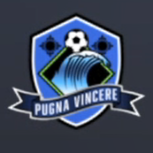
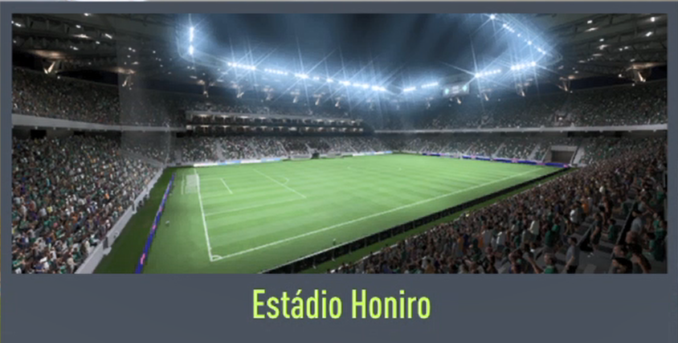
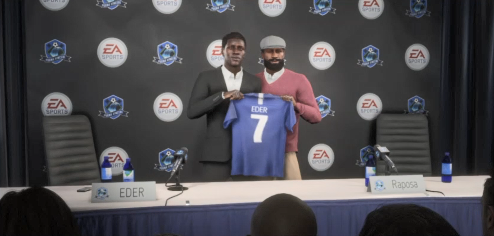
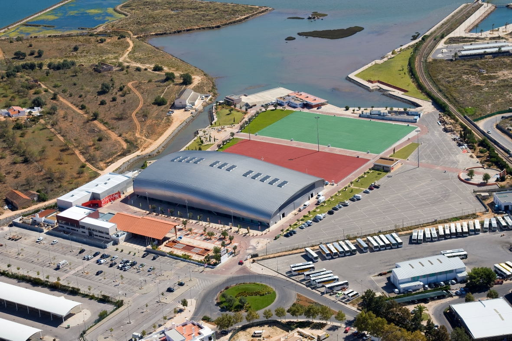

Futebol e Futsal
Honiro Futebol Club
O Honiro Futebol Clube é um clube de futebol fundado na Ilha Verde, jogam no Estádio Honiro. Compete atualmente na Indian Super League, sendo esta a competição no escalão mais alto do país. O investimento financeiro de um empresário indiano ajudou o clube a tornar-se o que é atualmente e conquistar a taça de campeão nacional na época 2021/2022
 Campeões Indian Super League

Contratação da temporada
A final
Honiro Futsal Club
O Honiro Futebol Clube é um clube de futebol português fundado na Ilha Verde, jogam na Honiro Arena. Fundado, vai começar a competir na época 2022/2023 na Indonesia Pro Futsal League, sendo esta a competição no escalão mais alto do país.
